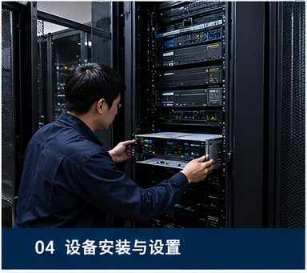
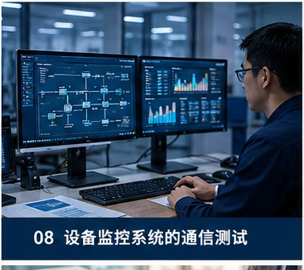
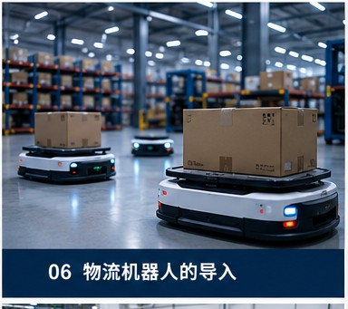
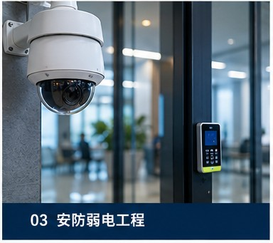

Our Projects
Trust and results built in the field
Recent Projects

Regional Data Center Network Infrastructure Build
Network & Communications Infrastructure
Designed and constructed a high-speed backbone network between server cabinets for a regional data center, achieving 99.99% availability through redundant configuration.

Manufacturing Plant IoT Sensor Network Deployment
Field Operations Digitalization Support
Deployed an IoT sensor network for equipment vibration and temperature monitoring at an automotive parts plant, reducing downtime by 30% through predictive maintenance.

Overseas Robot System Deployment in Japan
Technology System Deployment & Field Implementation Support
Imported European-made autonomous transport robots into a Japanese factory, providing comprehensive support including safety standard compliance and on-site employee training.

Historic Hotel Fire Alarm Integration System
Network, Communications & Fire Safety Infrastructure
Built an anomaly detection system integrated with existing fire alarm equipment at a historic-building hotel, balancing regulatory compliance with operational efficiency without altering the building's exterior.
Client Testimonials
"Izumo Soan's engineers don't just deploy technology — they truly understand how it is used on the ground. The system has become very convenient for our employees to use."
"After commissioning them for network stability support, they not only fixed the fault but also conducted root cause analysis and preventive measures. The same issue has never recurred."
"Since introducing the on-site photo management system, progress confirmation and quality inspections have become incredibly convenient. We cut site visits by more than half, yet inspections are more thorough."